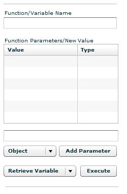

The Inspector will behave slightly differently for AS2 and AS3 content. For AS2 content, the Inspector will mimick the functionality of the OWASP SWFIntruder project. For AS3 content, the Inspector will allow you to manipulate the SWF by retrieving data values, assigning new values and calling functions. To prevent accidental execution of a SWF, you must click the Load Viewer button to launch a SWF.
The AS2 Inspector is modeled after the functionality provided within the OWASP SWFIntruder application. The application starts by retrieving a list of uninitialized values within the SWF. Uninitiaized values in AS2 can be initialized by FlashVars and are therefore a vector for cross-site scripting. You can manipulate the FlashVars supplied to the application and determine how it responds. You also have the ability to retrieve the value of any variable in the SWF regardless of whether it was initialized.
Note:This functionality currently only works for AS2 content loaded from the web.
The AS3Inspector will behave slightly differently depending on whether the content is on a remote website or stored locally on the drive. If it is stored remotely then an HTMLLoader will be used to frame the SWF. If it is stored locally, then the SWF is laoded using SWFLoader. The attributes that are available for testing are the same in either case.
Variable EntryAs you interact with the SWF, there are several places where you need to be able to supply variable information to the SWF. A centralized library is used to collect the variables so the interface is consistent throughout the application. For instance, on the SWFIntruder tabs, you will see the following data entry section:
In this section, you enter the variable you want to set, retrieve or call. In the case of an object, you would enter the name using dotted separation in the same way you would in code. For instance, assume you had an HTML text field within the SWF called, "foo". If you wanted to set the html property of that variable, then you would enter "foo.html" into the text box. If you were to call a function, then you would still use the dotted notation. For instance, "foo.html.toString".
Function Parameters/New ValueIn this box, you enter the new value or parameters for the function. If you are only assigning a single variable to the parameter list, then you would enter the value for the variable into the text field below the data grid. Select the data type from the pull down menu just below that and then click "Add Parameter." For a variable of type "array", SWF Investigator currently only supports an array of strings. Enter the strings in a comma-delimited format and SWF Investigator will perform a String.split() to create the array. If you plan to call a function that takes multiple parameters, then you can repeat the process to enter in the values by providing the value, selecting the type and clicking "Add Parameter."
To change the value of a variable already within the table, click the "Value" cell for the piece of data and enter in the new value. It will be updated when you de-select the cell.
To delete data from the table, click the "Value" cell for the item that is to be removed and delete the value from the cell. This will cause the row to be deleted when you de-select the cell.
Entering Object ParametersClick here for information on how to add objects to the parameters list.
Executing the change or callThe last step in the process is to select the action that you want to take which include "Retrieve Variable", "Call Function" or "Assign Variable." Once selected, click "Execute" to effect the change or call.
FlashVar ValuesIf you are loading a remote SWF that needs FlashVars, you can enter FlashVar Values at the bottom of the right hand column and click Update to reload the SWF using the FlashVars. The format for the FlashVars within the text field is the same as they would be within an embed tag.
Note:The Variables box in the top right hand corner is still under development and is non-functional at this time.